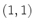
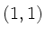

Using appropriate plt options, you can place labels anywhere in a plot, and you can place plots anywhere on a page. These plt options use four coordinate systems to specify position.
First is the data coordinate system: the coordinates defined by your
plot's axes. The ranges of the data coordinates depend on the ranges of  and values, or on the ranges you specify using the -xa and -ya
(or -X and -Y) options. The lower left corner of the data
coordinate system is
, and the upper right corner is
.
and values, or on the ranges you specify using the -xa and -ya
(or -X and -Y) options. The lower left corner of the data
coordinate system is
, and the upper right corner is
.
Second is the window coordinate system. Window coordinates,  ,
always range from
,
always range from  to . The window coordinates
to . The window coordinates  correspond to the data coordinates
, and the window
coordinates map to the data coordinates
.
correspond to the data coordinates
, and the window
coordinates map to the data coordinates
.
Third is the page coordinate system. Page coordinates, , always
range from  , at the lower left corner of the page, to at the
upper right corner. Using the -W option described later on, you can
specify a rectangle in page coordinates in which the plot is to be drawn; this
option thus allows you to draw multiple plots in any desired layout on a page.
When you make a screen plot, the ``page'' may be the entire screen, or it may
be an X window. When you make a printable plot, the ``page'' may be the entire
sheet of paper, or the printable area (generally less than the full sheet), or
it may represent a PostScript bounding box for a plot that can be incorporated
into another document such as this book.
, at the lower left corner of the page, to at the
upper right corner. Using the -W option described later on, you can
specify a rectangle in page coordinates in which the plot is to be drawn; this
option thus allows you to draw multiple plots in any desired layout on a page.
When you make a screen plot, the ``page'' may be the entire screen, or it may
be an X window. When you make a printable plot, the ``page'' may be the entire
sheet of paper, or the printable area (generally less than the full sheet), or
it may represent a PostScript bounding box for a plot that can be incorporated
into another document such as this book.
Figure 4.1 illustrates the relationships among data, window, and page coordinates. Note that it is always possible to refer to data, window, or page coordinates outside of the ranges of these coordinate systems. Depending on the plt options you have chosen, and in some cases on the output device (screen or printer), out-of-bounds elements may or may not appear in the output.
A fourth coordinate system, called text box coordinates, is used by plt to allow fine control over the positioning of text on plots.
plt places an imaginary text box around each string it prints. Descenders (the lower portions of ``g'', ``j'', ``p'', ``q'', ``y'', and ``,'') fall outside of the box, but each text box includes extra space above the top of the characters (30% to 40% of the basic height of the text) for any descenders from the line above. Text box coordinates are symbolic and discrete rather than numeric and continuous. Each text box has twelve points defined as shown in figure 4.2. Thus point CT is at the center of the top side of the text box, RB is the lower right corner, etc.
When you tell plt to print a string at  , plt usually places
text box point CC at
, plt usually places
text box point CC at  , thus centering the string on
, thus centering the string on  . By
naming the appropriate text box point as an argument to any of the options
described in chapter 8, Labelling Your Plot, you can
choose instead to place any of the four corners, the center of any side,
or any of the other defined points of the text box at
. By
naming the appropriate text box point as an argument to any of the options
described in chapter 8, Labelling Your Plot, you can
choose instead to place any of the four corners, the center of any side,
or any of the other defined points of the text box at  .
.
 |